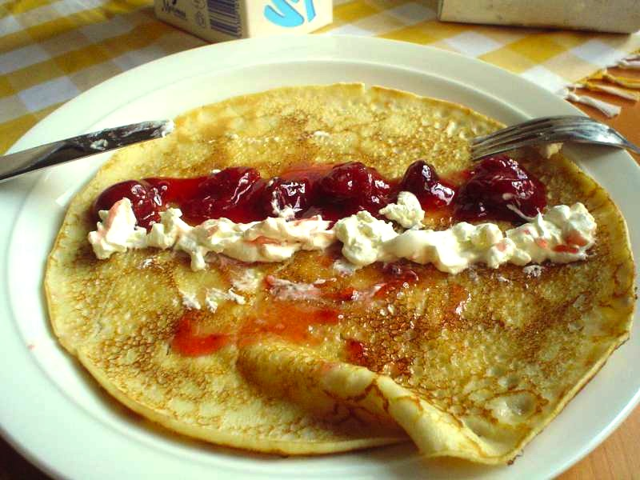

Swedish Pancakes

Description
Swedish pancakes (or pannkaka, pl. pannkakor) are a traditional treat similar to crepes. They are slightly
thicker than the French version of this treat
and are generally served with jam and whipped cream. Pannkakor are delicious any time of day, any time of year,
but are most traditionally eaten on Thursdays
at lunch time as a sweet treat after a big bowl of pea soup.
Recipes and techniques surrounding pannkakor vary, but are always deliciously pan fried. They are most often
served rolled up, but sometimes they are wedged,
folded, or even served spread out. Have fun with this recipe and enjoy one of my favorite foods.
Ingredients
- 3 eggs
- 1 ¼ cups milk
- ¾ cup all-purpose flour
- 1 tablespoon white sugar
- ½ teaspoon salt
- 1 tablespoon butter, or as needed
- Optional: your favorite jam and whipped cream
Steps
- Beat eggs in a bowl until thick and lemon-colored (about 3-5 minutes if using an electric mixer)
- Stir in milk
- Place ungreased griddle over medium heat
- Sift flour, sugar, and salt together in a bowl.
- Add to egg mixture. Mix until batter is smooth.
- Grease warm griddle with butter.
- Drop tablespoonfuls of batter on the griddle. Spread to make pancakes.
- Cook until light brown on bottom, 1 to 2 minutes.
- Flip and continue cooking until second side is light brown, 1 to 2 minutes.
- Repeat with remaining batter.
- Serve! It is recommended to serve with whipped cream and jam, but experiment with powdered sugar, syrup, and
any other topping of your choice.